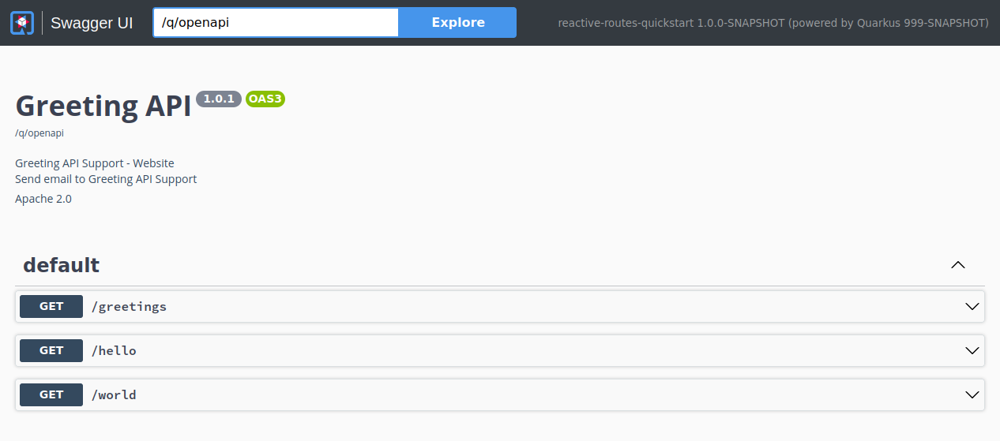

リアクティブルートの使用
Reactive routesは、HTTPエンドポイントを実装するための代替アプローチを提案するもので、 ルート を宣言してチェインさせるものです。このアプローチは、Express.JsやHapiのようなフレームワークで、JavaScriptの世界で非常に人気がありました。Quarkusも、リアクティブルートを使用する可能性を提供します。ルートだけでREST APIを実装したり、Jakarta RESTリソースやサーブレットと組み合わせたりすることができます。
このガイドで紹介するコードは、この GitHubリポジトリ の reactive-routes-quickstart ディレクトリ にあります。
| Reactive Routesは当初、 Quarkus Reactive Architecture 上でHTTP APIのリアクティブ実行モデルを提供するために導入されました。 Quarkus REST（旧RESTEasy Reactive ）の導入により、リアクティブなHTTP APIを実装しながら、Jakarta RESTアノテーションを使用できるようになりました。 リアクティブルートは引き続きサポートされており、特に、より ルートベース のアプローチや、基盤となるリアクティブエンジンに近いものを使用したい場合に便利です。 |
Quarkus HTTP
先に進む前に、QuarkusのHTTPレイヤーを見てみましょう。QuarkusのHTTPサポートは、ノンブロッキングでリアクティブなエンジン(Eclipse Vert.xとNetty)に基づいています。アプリケーションが受け取るすべてのHTTPリクエストは、 イベントループ (I/Oスレッド)によって処理され、リクエストを管理するコードに向かってルーティングされます。宛先に応じて、ワーカースレッド(Servlet、Jax-RS)でリクエストを管理するコードを呼び出すか、IOスレッド(Reactive Routes)を使用します。このため、Reactive Routesはノンブロッキングであるか、そのブロッキング性を明示的に宣言しなければならないことに注意してください (ワーカースレッド上で呼び出されることで結果的にブロッキングされます)。

このトピックの詳細については、Quarkus リアクティブアーキテクチャのドキュメント を参照してください。
Reactive Routesの宣言
Reactive Routes を使用する最初の方法は、 @Route アノテーションを使用することです。このアノテーションにアクセスするには、次のコマンドを実行し quarkus-reactive-routes エクステンションを追加する必要があります。
quarkus extension add quarkus-reactive-routes./mvnw quarkus:add-extension -Dextensions='quarkus-reactive-routes'./gradlew addExtension --extensions='quarkus-reactive-routes'これにより、 pom.xml に以下が追加されます:
<dependency>
<groupId>io.quarkus</groupId>
<artifactId>quarkus-reactive-routes</artifactId>
</dependency>implementation("io.quarkus:quarkus-reactive-routes")そして、 Bean では、以下のように @Route アノテーションを使用することができます。
package org.acme.reactive.routes;
import io.quarkus.vertx.web.Route;
import io.quarkus.vertx.web.Route.HttpMethod;
import io.quarkus.vertx.web.RoutingExchange;
import io.vertx.ext.web.RoutingContext;
import jakarta.enterprise.context.ApplicationScoped;
@ApplicationScoped (1)
public class MyDeclarativeRoutes {
// neither path nor regex is set - match a path derived from the method name
@Route(methods = Route.HttpMethod.GET) (2)
void hello(RoutingContext rc) { (3)
rc.response().end("hello");
}
@Route(path = "/world")
String helloWorld() { (4)
return "Hello world!";
}
@Route(path = "/greetings", methods = Route.HttpMethod.GET)
void greetingsQueryParam(RoutingExchange ex) { (5)
ex.ok("hello " + ex.getParam("name").orElse("world")); (6)
}
@Route(path = "/greetings/:name", methods = Route.HttpMethod.GET) (7)
void greetingsPathParam(@Param String name, RoutingExchange ex) {
ex.ok("hello " + name);
}
}| 1 | スコープアノテーションがないクラスでリアクティブルートが見つかった場合、 @jakarta.inject.Singleton が自動的に追加されます。 |
| 2 | @Route アノテーションは、メソッドがリアクティブルートであることを示します。繰り返しになりますが、デフォルトでは、メソッドに含まれるコードはブロックしてはいけません。 |
| 3 | このメソッドは、 RoutingContext をパラメーターとして取得します。 RoutingContext から HTTP リクエストを ( request() を使用して) 取得し、 response().end(…) を使用してレスポンスを書き込むことができます。 |
| 4 | アノテーションされたメソッドが void を返さない場合、引数はオプションです。 |
| 5 | RoutingExchange は、いくつかの便利なメソッドを提供する RoutingContext の便利なラッパーです。 |
| 6 | RoutingExchange は、リクエストクエリパラメータ name を取得するために使用されます。 |
| 7 | パスはパラメータ name を定義します。パラメータ name は @Param アノテーションを使用してメソッドパラメータ内に注入することができます 。 |
RoutingContext の使用の詳細については、 Vert.x Web ドキュメント を参照してください。
@Route アノテーションを使用すると、以下を設定できます。
-
path- Vert.x Web フォーマット を使用したパスによるルーティング用 -
regex- 正規表現を使用したルーティングについては、 詳細 を参照してください。 -
methods-GET、POSTなどのルートをトリガーする HTTP 動詞 -
type- normal (ノンブロッキング)、blocking (ワーカスレッドにディスパッチされるメソッド)、あるいは failure で、失敗時にこのルートが呼び出されることを示します。 -
order- 受信リクエストの処理に複数のルートが関与している場合のルートの順序。通常のユーザールートでは正である必要があります。 -
producesとconsumesを使用して生成および消費された mime タイプ。
たとえば、次のようにブロッキングルートを宣言できます。
@Route(methods = HttpMethod.POST, path = "/post", type = Route.HandlerType.BLOCKING)
public void blocking(RoutingContext rc) {
// ...
}|
または、
|
@Route アノテーションは繰り返し可能であるため、1 つのメソッドに対して複数のルートを宣言できます。
@Route(path = "/first") (1)
@Route(path = "/second")
public void route(RoutingContext rc) {
// ...
}| 1 | 各ルートは、異なるパスやメソッドなどを使用できます。 |
もしcontent-typeヘッダーが設定されていなければ、acceptヘッダーを io.vertx.ext.web.RoutingContext.getAcceptableContentType() で定義されている Route produces属性の値と照合して、最も受け入れやすいコンテンツタイプを使用しようと試みます。
@Route(path = "/person", produces = "text/html") (1)
String person() {
// ...
}| 1 | accept ヘッダーが text/html と一致する場合、コンテンツタイプを自動的に text/html に設定します。 |
仮想スレッドでのルートの実行
仮想スレッド上で実行するために、ルートメソッドに @io.smallrye.common.annotation.RunOnVirtualThread のアノテーションを付けることができます。しかし、すべてが仮想スレッド上で安全に実行できるわけではないことに注意してください。 仮想スレッドサポートのリファレンス をよく読んで、すべての詳細を理解してください。
競合するルートの処理
特定のパスに複数のルートが一致する場合があります。次の例では、両方のルートが /accounts/me に一致しています。
@Route(path = "/accounts/:id", methods = HttpMethod.GET)
void getAccount(RoutingContext rc) {
...
}
@Route(path = "/accounts/me", methods = HttpMethod.GET)
void getCurrentUserAccount(RoutingContext rc) {
...
}その結果、パスパラメーター id が me に設定された状態で最初のルートが呼び出されます。競合を回避するには、 order 属性を使用します。
@Route(path = "/accounts/:id", methods = HttpMethod.GET, order = 2)
void getAccount(RoutingContext rc) {
...
}
@Route(path = "/accounts/me", methods = HttpMethod.GET, order = 1)
void getCurrentUserAccount(RoutingContext rc) {
...
}2 番目のルートに低い順序を与えることで、それが最初に評価されます。リクエストパスが一致する場合は呼び出され、一致しない場合は他のルートが評価されます。
@RouteBase
このアノテーションを使用して、クラスで宣言されたReactive Routesのデフォルトを設定できます。
@RouteBase(path = "simple", produces = "text/plain") (1) (2)
public class SimpleRoutes {
@Route(path = "ping") // the final path is /simple/ping
void ping(RoutingContext rc) {
rc.response().end("pong");
}
}| 1 | path 値は、 Route#path() が使用されるクラスで宣言されたルートメソッドの接頭辞として使用されます。 |
| 2 | produces() の値は、 Route#produces() が空のすべてのルートで、コンテンツベースのルーティングに使用されます。 |
Reactive Routesメソッド
ルートメソッドは、CDIBean の非プライベート非静的メソッドでなければなりません。アノテーションされたメソッドが void を返す場合は、少なくとも 1 つの引数を受け入れる必要があります。以下はサポート対象のタイプです。アノテーションされたメソッドが void を返さない場合、引数はオプションになります。
void を返すメソッドは、このルートへの応答または HTTP リクエストを 終了 する必要があります。 RoutingExchange のメソッドの中には、それを行うものとそうでないものがあり、レスポンスの end () メソッドを自分で呼び出す必要があります。詳細については、JavaDoc を参照してください。
|
ルートメソッドは、次のタイプの引数を受け取ることができます。
-
io.vertx.ext.web.RoutingContext -
io.quarkus.vertx.web.RoutingExchange -
io.vertx.core.http.HttpServerRequest -
io.vertx.core.http.HttpServerResponse -
io.vertx.mutiny.core.http.HttpServerRequest -
io.vertx.mutiny.core.http.HttpServerResponse
さらに、 HttpServerRequest パラメーターを以下の型を使用した @io.quarkus.vertx.web.Param でアノテーションされたメソッドパラメーターに挿入できます。
| パラメータータイプ | 取得方法 |
|---|---|
|
|
|
|
|
|
@Route
String hello(@Param Optional<String> name) {
return "Hello " + name.orElse("world");
}HttpServerRequest ヘッダーは、以下の型を使用した @io.quarkus.vertx.web.Header でアノテーションされたメソッドパラメーターに挿入できます。
| パラメータータイプ | 取得方法 |
|---|---|
|
|
|
|
|
|
@Route
String helloFromHeader(@Header("My-Header") String header) {
return header;
}リクエストボディは、以下の型を使用した、 @io.quarkus.vertx.web.Body でアノテーションされたメソッドパラメーターに注入することができます。
| パラメータータイプ | 取得方法 |
|---|---|
|
|
|
|
|
|
|
|
他の型 |
|
@Route(produces = "application/json")
Person createPerson(@Body Person person, @Param("id") Optional<String> primaryKey) {
person.setId(primaryKey.map(Integer::valueOf).orElse(42));
return person;
}失敗ハンドラーは、タイプが Throwable を拡張する単一のメソッドパラメーターを宣言できます。パラメーターのタイプは、 RoutingContext#failure() の結果と一致させるために使用されます。
@Route(type = HandlerType.FAILURE)
void unsupported(UnsupportedOperationException e, HttpServerResponse response) {
response.setStatusCode(501).end(e.getMessage());
}Uni を返す
Reactive Routesでは、 Uni を直接返すことができます。
@Route(path = "/hello")
Uni<String> hello() {
return Uni.createFrom().item("Hello world!");
}
@Route(path = "/person")
Uni<Person> getPerson() {
return Uni.createFrom().item(() -> new Person("neo", 12345));
}リアクティブクライアントを使用している場合、 Unis を返すと便利です。
@Route(path = "/mail")
Uni<Void> sendEmail() {
return mailer.send(...);
}返された Uni によって生成されるアイテムは以下のとおりです。
-
文字列 - HTTP レスポンスに直接書き込まれます
-
io.vertx.core.buffer.Buffer- HTTP レスポンスに直接書き込まれます -
オブジェクト - JSON にエンコードされた後に HTTP レスポンスに書き込まれます。まだ設定されていない場合、
content-typeヘッダーはapplication/jsonに設定されます。
返された Uni が失敗した場合 (または null の場合)、HTTP 500 レスポンスが書き込まれます。
Uni<Void> を返すと 204 レスポンス (コンテンツなし) が生成されます。
結果を返す
結果を直接返すこともできます。
@Route(path = "/hello")
String helloSync() {
return "Hello world";
}Reactive Routesは IO スレッドで呼び出されるため、処理は 非ブロッキング である必要があることに注意してください。それ以外の場合は、 @Route アノテーションの type 属性を Route.HandlerType.BLOCKING に設定するか、 @io.smallrye.common.annotation.Blocking アノテーションを使用します。
メソッドは以下を返すことができます。
-
文字列 - HTTP レスポンスに直接書き込まれます
-
io.vertx.core.buffer.Buffer- HTTP レスポンスに直接書き込まれます -
オブジェクト - JSON にエンコードされた後に HTTP レスポンスに書き込まれます。まだ設定されていない場合、
content-typeヘッダーはapplication/jsonに設定されます。
Multi を返す
Reactive Routesは Multi を返すことができます。レスポンスでは、項目が 1 つずつ書き込まれます。レスポンスの Transfer-Encoding ヘッダーは chunked に設定されます。
@Route(path = "/hello")
Multi<String> hellos() {
return Multi.createFrom().items("hello", "world", "!"); (1)
}| 1 | helloworld! の生成 |
メソッドは以下を返すことができます。
-
Multi<String>- アイテムはレスポンスに 1 つずつ ( チャンク ごとに 1 つ) 書き込まれます。 -
Multi<Buffer>- バッファーは処理なしで 1 つずつ ( チャンク ごとに 1 つ) 書き込まれます。 -
Multi<Object>- アイテムは、 JSON にエンコードされ、レスポンスに 1 つずつ書き込まれるます。
@Route(path = "/people")
Multi<Person> people() {
return Multi.createFrom().items(
new Person("superman", 1),
new Person("batman", 2),
new Person("spiderman", 3));
}前のスニペットは以下を生成します。
{"name":"superman", "id": 1} // chunk 1
{"name":"batman", "id": 2} // chunk 2
{"name":"spiderman", "id": 3} // chunk 3JSON 配列アイテムのストリーミング
Multi を返して、JSON 配列を生成できます。その場合、すべてのアイテムはこの配列のアイテムです。レスポンスは、クライアントに青て、いごとに書き込まれます。これを行うには、 produces 属性を "application/json" (または ReactiveRoutes.APPLICATION_JSON) に設定します。
@Route(path = "/people", produces = ReactiveRoutes.APPLICATION_JSON)
Multi<Person> people() {
return Multi.createFrom().items(
new Person("superman", 1),
new Person("batman", 2),
new Person("spiderman", 3));
}前のスニペットは以下を生成します。
[
{"name":"superman", "id": 1} // chunk 1
,{"name":"batman", "id": 2} // chunk 2
,{"name":"spiderman", "id": 3} // chunk 3
]
produces 属性は配列です。単一の値を渡す場合は、{" と "}" を省略できます。 "application/json" は配列の最初の値でなければならないことに注意してください。
|
Multi<String>、 Multi<Object>、 Multi<Void> のみ JSON 配列に書き込むことができます。 Multi<Void> を使用すると空の配列が生成されます。 Multi<Buffer> は使用できません。 Buffer を使用する必要がある場合は、最初にコンテンツを JSON または文字列表現に変換します。
asJsonArray の非推奨
|
イベントストリームとサーバー送信イベントのサポート
Multi を返して、イベントソース (サーバー送信イベントのストリーム) を生成できます。この機能を有効にするには、次のように produces 属性を "text/event-stream" (または ReactiveRoutes.EVENT_STREAM) に設定します。
@Route(path = "/people", produces = ReactiveRoutes.EVENT_STREAM)
Multi<Person> people() {
return Multi.createFrom().items(
new Person("superman", 1),
new Person("batman", 2),
new Person("spiderman", 3));
}この方法では、以下が生成されます。
data: {"name":"superman", "id": 1}
id: 0
data: {"name":"batman", "id": 2}
id: 1
data: {"name":"spiderman", "id": 3}
id: 2
produces 属性は配列です。単一の値を渡す場合は、{" と "}" を省略できます。 "text/event-stream" は配列の最初の値でなければならないことに注意してください。
|
io.quarkus.vertx.web.ReactiveRoutes.ServerSentEvent インターフェイスを実装して、サーバー送信イベントの event および id セクションをカスタマイズすることもできます。
class PersonEvent implements ReactiveRoutes.ServerSentEvent<Person> {
public String name;
public int id;
public PersonEvent(String name, int id) {
this.name = name;
this.id = id;
}
@Override
public Person data() {
return new Person(name, id); // Will be JSON encoded
}
@Override
public long id() {
return id;
}
@Override
public String event() {
return "person";
}
}Multi<PersonEvent> を使用すると、以下が生成されます。
event: person
data: {"name":"superman", "id": 1}
id: 1
event: person
data: {"name":"batman", "id": 2}
id: 2
event: person
data: {"name":"spiderman", "id": 3}
id: 3
asEventStream の非推奨
|
NDJSON 形式の Json ストリーム
Multi を返して、JSON 値の改行区切りストリームを生成できます。この機能を有効にするには、 @Route アノテーションの produces 属性を "application/x-ndjson" (または ReactiveRoutes.ND_JSON) に設定します。
@Route(path = "/people", produces = ReactiveRoutes.ND_JSON)
Multi<Person> people() {
return ReactiveRoutes.asJsonStream(Multi.createFrom().items(
new Person("superman", 1),
new Person("batman", 2),
new Person("spiderman", 3)
));
}この方法では、以下が生成されます。
{"name":"superman", "id": 1}
{"name":"batman", "id": 2}
{"name":"spiderman", "id": 3}
produces 属性は配列です。単一の値を渡す場合は、{" と "}" を省略できます。 "application/x-ndjson" は配列の最初の値でなければならないことに注意してください。
|
オブジェクトの代わりに文字列を指定することもできます。その場合、文字列を引用符で囲うことで、有効な JSON 値になります。
@Route(path = "/people", produces = ReactiveRoutes.ND_JSON)
Multi<Person> people() {
return ReactiveRoutes.asJsonStream(Multi.createFrom().items(
"superman",
"batman",
"spiderman"
));
}"superman"
"batman"
"spiderman"
asJsonStream の非推奨
|
Bean バリデーションの使用
Reactive Routesと Bean バリデーションを組み合わせることができます。まず、プロジェクトに quarkus-hibernate-validator エクステンションを必ず追加してください。次に、ルートパラメーターに制約を追加できます (@Param または @Body でアノテーションされます)。
@Route(produces = "application/json")
Person createPerson(@Body @Valid Person person, @NonNull @Param("id") String primaryKey) {
// ...
}パラメーターがテストに合格しなかった場合、HTTP 400 レスポンスを返します。リクエストが JSON ペイロードを受け入れる場合、レスポンスは 問題 のとおりの形式になります。
オブジェクトまたは Uni を返す場合、 @Valid アノテーションも使用できます。
@Route(...)
@Valid Uni<Person> createPerson(@Body @Valid Person person, @NonNull @Param("id") String primaryKey) {
// ...
}ルートによって生成されたアイテムがバリデーションを通過しない場合、HTTP 500 レスポンスが返されます。リクエストが JSON ペイロードを受け入れる場合、レスポンスは 問題 のとおりの形式になります。
リターンタイプでは @Valid のみがサポートされていることに注意してください。返されるクラスは任意の制約を使用できます。 Uni の場合、非同期で生成されたアイテムをチェックします。
Vert.x Web ルーターの使用
ルートを Router オブジェクトに直接登録することにより、ルートを HTTP ルーティングレイヤー に直接登録することもできます。起動時に Router インスタンスを取得するには、以下を実行します。
public void init(@Observes Router router) {
router.get("/my-route").handler(rc -> rc.response().end("Hello from my route"));
}ルート登録、オプション、および使用可能なハンドラーの詳細については、 Vert.x Web ドキュメント を確認してください。
|
|
ルーターの Mutiny バリアント (io.vertx.mutiny.ext.web.Router) を受け取ることもできます。
public void init(@Observes io.vertx.mutiny.ext.web.Router router) {
router.get("/my-route").handler(rc -> rc.response().endAndForget("Hello from my route"));
}HTTP リクエストのインターセプト
また、受信した HTTP リクエストをインターセプトするようなフィルターを登録することも可能です。なお、これらのフィルタは、サーブレット、jakarta RESTリソース、リアクティブルートにも適用されます。
たとえば、次のコードスニペットは、HTTP ヘッダーを追加するフィルターを登録します。
package org.acme.reactive.routes;
import io.vertx.ext.web.RoutingContext;
public class MyFilters {
@RouteFilter(100) (1)
void myFilter(RoutingContext rc) {
rc.response().putHeader("X-Header", "intercepting the request");
rc.next(); (2)
}
}| 1 | RouteFilter#value() は、フィルターの並べ替えに使用される優先度を定義します。優先度の高いフィルターが先に呼び出されます。 |
| 2 | フィルターが `next()`メソッドを呼び出さなければ、チェーンを継続できない可能性があります。 |
HTTP圧縮
HTTP レスポンスのボディは、デフォルトでは圧縮されていません。 quarkus.http.enable-compression=true を使用して HTTP 圧縮サポートを有効にできます。
圧縮サポートが有効であれば、以下の場合にレスポンスボディが圧縮されます。
-
ルートメソッドが
@ io.quarkus.vertx.http.Compressedでアノテーションされている、または -
Content-Typeヘッダーが設定されており、その値はquarkus.http.compress-media-typesを介して設定された圧縮メディアタイプである。
次の場合、レスポンスボディは圧縮されません。
-
ルートメソッドが
@io.quarkus.vertx.http.Uncompressedでアノテーションされている、または -
Content-Typeヘッダーが設定されていない。
デフォルトでは、以下のメディアタイプのリストが圧縮されます： text/html text/plain , text/xml , text/css , text/javascript , application/javascript , application/json , application/graphql+json および application/xhtml+xml 。
|
| クライアントが HTTP 圧縮をサポートしていない場合、レスポンスボディは圧縮されません。 |
OpenAPI と Swagger UI の追加
quarkus-smallrye-openapi エクステンションを使用してOpenAPI および Swagger UI のサポートを追加できます。
このコマンドを実行してエクステンションを追加
quarkus extension add quarkus-smallrye-openapi./mvnw quarkus:add-extension -Dextensions='quarkus-smallrye-openapi'./gradlew addExtension --extensions='quarkus-smallrye-openapi'これにより、 pom.xml に以下が追加されます:
<dependency>
<groupId>io.quarkus</groupId>
<artifactId>quarkus-smallrye-openapi</artifactId>
</dependency>implementation("io.quarkus:quarkus-smallrye-openapi")これだけで、Vert.x ルートから基本的な OpenAPI スキーマドキュメントを生成できます。
curl http://localhost:8080/q/openapi生成された OpenAPI スキーマドキュメントが表示されます。
---
openapi: 3.0.3
info:
title: Generated API
version: "1.0"
paths:
/greetings:
get:
responses:
"204":
description: No Content
/hello:
get:
responses:
"204":
description: No Content
/world:
get:
responses:
"200":
description: OK
content:
'*/*':
schema:
type: stringOpenAPI ガイド も参照してください。
MicroProfile OpenAPIアノテーションの追加
MicroProfile OpenAPI を使用してスキーマをよりよくドキュメント化することができます。例えば、ヘッダー情報を追加したり、 void メソッドの戻り値の型を指定したりすると便利かもしれません:
@OpenAPIDefinition( (1)
info = @Info(
title="Greeting API",
version = "1.0.1",
contact = @Contact(
name = "Greeting API Support",
url = "http://exampleurl.com/contact",
email = "techsupport@example.com"),
license = @License(
name = "Apache 2.0",
url = "https://www.apache.org/licenses/LICENSE-2.0.html"))
)
@ApplicationScoped
public class MyDeclarativeRoutes {
// neither path nor regex is set - match a path derived from the method name
@Route(methods = Route.HttpMethod.GET)
@APIResponse(responseCode="200",
description="Say hello",
content=@Content(mediaType="application/json", schema=@Schema(type=SchemaType.STRING))) (2)
void hello(RoutingContext rc) {
rc.response().end("hello");
}
@Route(path = "/world")
String helloWorld() {
return "Hello world!";
}
@Route(path = "/greetings", methods = HttpMethod.GET)
@APIResponse(responseCode="200",
description="Greeting",
content=@Content(mediaType="application/json", schema=@Schema(type=SchemaType.STRING)))
void greetings(RoutingExchange ex) {
ex.ok("hello " + ex.getParam("name").orElse("world"));
}
}| 1 | APIに関するヘッダー情報 |
| 2 | レスポンスの定義 |
これにより、このOpenAPIスキーマが生成されます。
---
openapi: 3.0.3
info:
title: Greeting API
contact:
name: Greeting API Support
url: http://exampleurl.com/contact
email: techsupport@example.com
license:
name: Apache 2.0
url: https://www.apache.org/licenses/LICENSE-2.0.html
version: 1.0.1
paths:
/greetings:
get:
responses:
"200":
description: Greeting
content:
application/json:
schema:
type: string
/hello:
get:
responses:
"200":
description: Say hello
content:
application/json:
schema:
type: string
/world:
get:
responses:
"200":
description: OK
content:
'*/*':
schema:
type: stringSwagger UIの使用
Swagger UIは、 dev または test モードで実行するとデフォルトで含まれ、オプションで prod モードに追加できます。
詳細については、 Swagger UI ガイドを参照してください。
localhost:8080/q/swagger-ui/ を開いて、Swagger UI画面を確認します:
